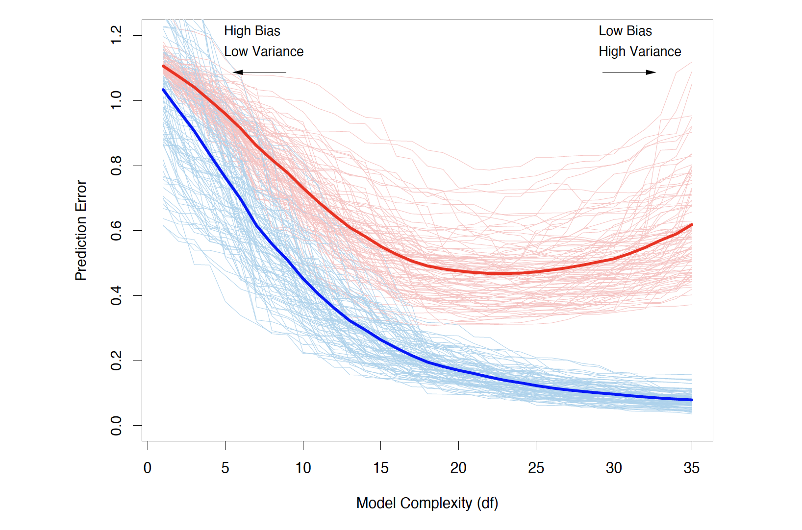
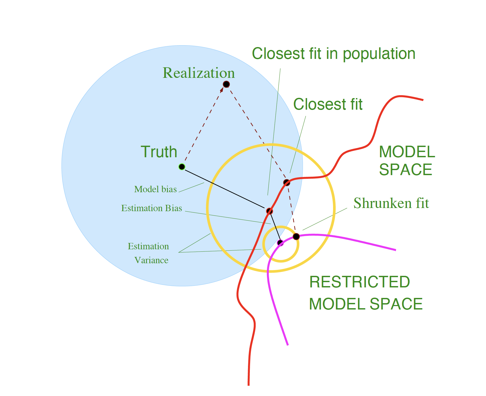
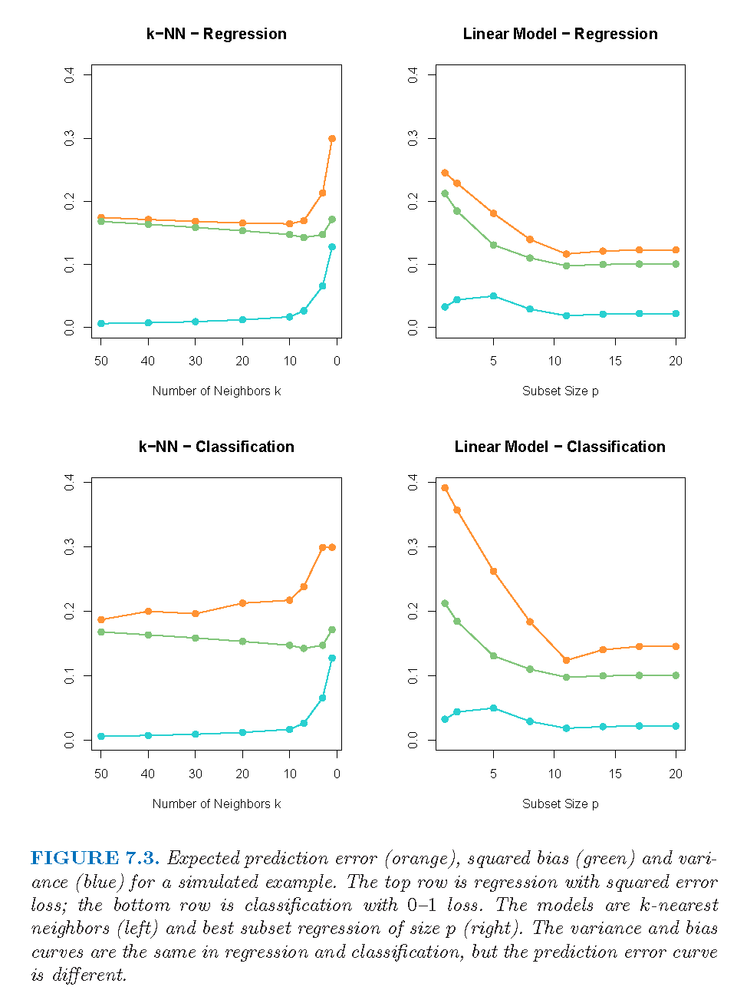
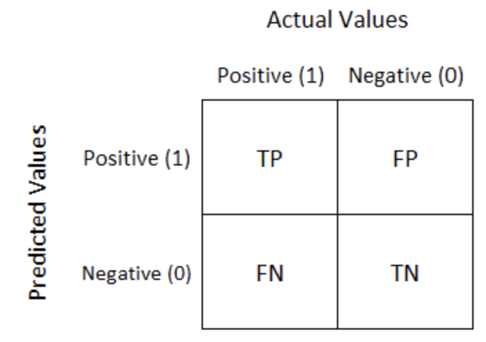
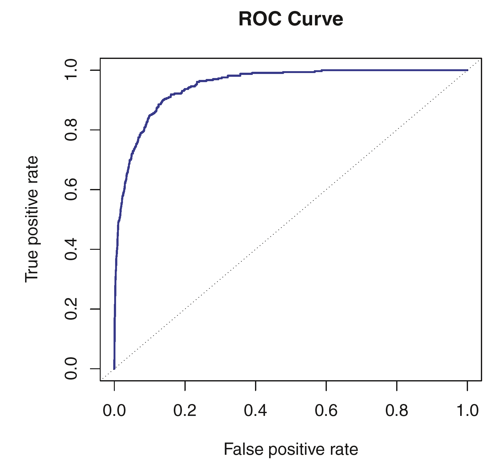
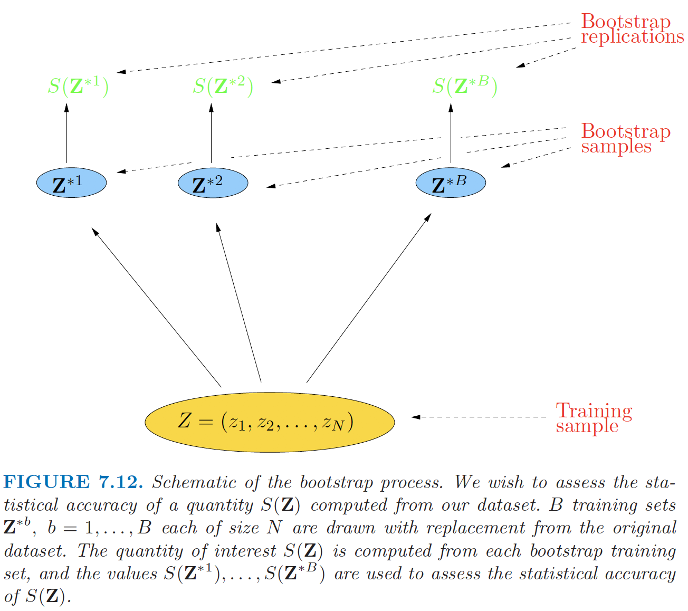

Lecture: Model Assessment and Selection
Actuarial Data Science - Open Learning Resource
Recommended Reading
- The Elements of Statistical Learning (ESL): Chapter 7 (excluding Sections 7.8 and 7.9)
- An Introduction to Statistical Learning (ISLR): Review Sections 2.2, 4.4, 5, and 6.1.3
Learning Objectives
Up to this point, you have seen many modelling techniques. This lecture helps you answer a natural follow-up question: which model should I trust, and how do I know it will work on new data? We focus on practical tools for comparing models and understanding the trade-off between bias, variance, and complexity.
- Understand different measures and techniques for model assessment and selection.
- Explain bias, variance and model complexity.
- Use a range of statistical measures and techniques to assess model performance, select models, and distinguish between methods for regression and classification.
- Assess the appropriateness and performance of a model, taking into account business context and objectives.
Some Statistical Machine Learning Principles
No Free Lunch Theorem
There is no single best model that works optimally for all kinds of problems.
Occam’s Razor
The law of parsimony for problem-solving: “entities should not be multiplied without necessity.”
Bias, Variance and Model Complexity
Introduction
- The generalisation performance of a learning method relates to its prediction capability on independent test data.
- We introduce key methods for performance assessment and model selection.
- Model selection: estimating the performance of different models in order to choose the best one.
- Model assessment: having chosen a final model, estimating its prediction error (generalisation error) on new data.
Loss Function for Quantitative Response
- We have a quantitative response variable Y, a vector of inputs \mathbf{X}, and a prediction model \hat{f}(\mathbf{X}) estimated from a training set \mathcal{T}.
- The loss function for measuring prediction errors is L(Y, \hat{f}(\mathbf{X})): L(Y,\hat{f}(\mathbf{X})) = \begin{cases} (Y - \hat{f}(\mathbf{X}))^2 & \text{(squared error)} \\ |Y - \hat{f}(\mathbf{X})| & \text{(absolute error)} \end{cases}
Loss Function for Categorical Response
- The story is similar for a categorical response G taking one of K values (1, 2, \dots, K) in a set \mathcal{G}.
- Typically, we model the probabilities p_k(\mathbf{X}) = \Pr(G = k \mid \mathbf{X}).
- The predicted class is \hat{G} = \arg\max_k \hat{p}_k(\mathbf{X}).
- Loss functions:
- L(G, \hat{G}(\mathbf{X})) = I(G \ne \hat{G}(\mathbf{X})) (0–1 loss)
- L(G, \hat{p}(\mathbf{X})) = -2 \sum_{k=1}^{K} I(G = k)\log \hat{p}_k(\mathbf{X}) = -2 \log \hat{p}_G(\mathbf{X})
- -2 \times log-likelihood is sometimes referred to as the deviance
- Can a loss function always align with your objective? (application-driven + convexity considerations)
Log-Likelihood Loss Function
- The log-likelihood can be used as a loss function for general response distributions, such as Poisson, Gamma, Exponential, log-normal, and others.
- If \Pr_{\theta(\mathbf{X})}(Y) is the density of Y, indexed by a parameter \theta(\mathbf{X}) that depends on the predictor \mathbf{X}, then L(Y, \theta(\mathbf{X})) = -2 \log \Pr_{\theta(\mathbf{X})}(Y).
- What if no likelihood is available?
- Why not use accuracy as the loss? (non-convex, NP-hard)
Errors for Quantitative Response
- Test error (generalisation error): the prediction error over an independent test sample
\text{Err}_{\mathcal{T}} = \mathbb{E}\big[ L(Y, \hat{f}(\mathbf{X})) \mid \mathcal{T} \big]
- Both \mathbf{X} and Y are drawn randomly from their joint distribution (population)
- The training set \mathcal{T} is fixed, and test error refers to the error for this specific training set
- Expected test error (expected prediction error): averages over all sources of randomness, including the randomness in the training set that produced \hat{f} \mathrm{Err} = \mathbb{E}\big[ L(Y, \hat{f}(\mathbf{X})) \big] = \mathbb{E}\big[ \mathrm{Err}_{\mathcal{T}} \big]
- Training error: the average loss over the training sample \overline{\mathrm{err}} = \frac{1}{N} \sum_{i=1}^{N} L(y_i, \hat{f}(\mathbf{x}_i))
Errors for Categorical Response
- Test error: the population misclassification error of the classifier trained on \mathcal{T} \mathrm{Err}_{\mathcal{T}} = \mathbb{E}\big[ L(G, \hat{G}(\mathbf{X})) \mid \mathcal{T} \big]
- Expected test error (expected misclassification error): the expected misclassification error \mathrm{Err} = \mathbb{E}\big[ L(G, \hat{G}(\mathbf{X})) \big] = \mathbb{E}\big[ \mathrm{Err}_{\mathcal{T}} \big]
- Training error (example using log-loss / deviance): \overline{\mathrm{err}} = -\frac{2}{N} \sum_{i=1}^{N} \log \hat{p}_{g_i}(\mathbf{x}_i)
Model Assessment and Selection
Assume the tuning parameter is \alpha, and write the predictions as \hat{f}_\alpha(x).
The tuning parameter controls the complexity of the model.
Objectives:
- Find the value of \alpha that minimises the expected test error
- Assess the generalisation error of the final chosen model
Model Assessment and Selection (continued)
How can we do this?
- What if there is insufficient data to split into three parts? How much training data is enough?
- Solutions: approximate the validation step
- Analytical approaches: AIC, BIC, MDL, SRM
- Efficient sample re-use: cross-validation, bootstrap
The Bias-Variance Decomposition
- Model: Y = f(\mathbf{X}) + \epsilon, where \mathbb{E}(\epsilon) = 0 and \mathrm{Var}(\epsilon) = \sigma_\epsilon^2.
- For an input point \mathbf{X} = \mathbf{x}_0, using squared-error loss, the expected prediction error is \begin{aligned} \mathrm{Err}(\mathbf{x}_0) &= \mathbb{E}\big[(Y - \hat{f}(\mathbf{x}_0))^2 \mid \mathbf{X} = \mathbf{x}_0 \big] \\ &= \sigma_\epsilon^2 + \big(\mathbb{E}[\hat{f}(\mathbf{x}_0)] - f(\mathbf{x}_0)\big)^2 + \mathbb{E}\big[\big(\hat{f}(\mathbf{x}_0) - \mathbb{E}[\hat{f}(\mathbf{x}_0)]\big)^2\big] \\ &= \sigma_\epsilon^2 + \mathrm{Bias}^2\!\big(\hat{f}(\mathbf{x}_0)\big) + \mathrm{Var}\!\big(\hat{f}(\mathbf{x}_0)\big) \\ &= \text{Irreducible error} + \text{Bias}^2 + \text{Variance} \end{aligned}
- Typically, as model complexity increases, the (squared) bias decreases, but the variance increases.
- Examples: linear regression, k-nearest neighbour regression, ridge regression
Model Bias and Estimation Bias
For ridge regression, let \boldsymbol{\beta}_\ast denote the parameters of the best-fitting linear approximation to f: \boldsymbol{\beta}_\ast = \arg\min_{\boldsymbol{\beta}} \, \mathbb{E}\big[ (f(\mathbf{X}) - \mathbf{X}^\top \boldsymbol{\beta})^2 \big]
Assume the input variable \mathbf{X} is random and the tuning parameter is \alpha.
For ridge regression, the average squared bias can be decomposed as: \begin{aligned} \mathbb{E}_{\mathbf{x}_0}\big[ f(\mathbf{x}_0) - \mathbb{E}\hat{f}_\alpha(\mathbf{x}_0) \big]^2 &= \mathbb{E}_{\mathbf{x}_0}\big[ f(\mathbf{x}_0) - \mathbf{x}_0^\top \boldsymbol{\beta}_\ast \big]^2 \\ &\quad + \mathbb{E}_{\mathbf{x}_0}\big[ \mathbf{x}_0^\top \boldsymbol{\beta}_\ast - \mathbb{E}(\mathbf{x}_0^\top \hat{\boldsymbol{\beta}}_\alpha) \big]^2 \\ &= \text{Ave}[\text{Model bias}]^2 + \text{Ave}[\text{Estimation bias}]^2 \end{aligned}
Model Bias and Estimation Bias (continued)
- Model bias: the error between the best-fitting linear approximation and the true function
- How can we reduce model bias?
- Estimation bias: the error between the average estimate and the best-fitting linear approximation
- OLS vs shrinkage
Bias, Variance and Model Complexity

Bias-Variance Trade-off

Example

Estimates of In-Sample Prediction Error
Optimism of the Training Error Rate
- In-sample prediction error \mathrm{Err}_{\text{in}} = \frac{1}{N} \sum_{i=1}^{N} \mathbb{E}_{Y^0}\big[ L(Y_i^0, \hat{f}(\mathbf{x}_i)) \mid \mathcal{T} \big] The notation Y^0 indicates that we observe N new response values at the training points \mathbf{x}_i, i = 1, 2, \dots, N.
- Optimism is the difference between \mathrm{Err}_{\text{in}} and the training error \overline{\mathrm{err}}: \mathrm{op} \equiv \mathrm{Err}_{\text{in}} - \overline{\mathrm{err}}
- The average optimism is the expectation of the optimism over training sets: w \equiv \mathbb{E}_{\mathbf{y}}(\mathrm{op})
- For squared error, 0–1 loss, and other loss functions, one can show quite generally that w = \frac{2}{N} \sum_{i=1}^{N} \mathrm{Cov}(\hat{y}_i, y_i)
In-sample Prediction Error
\mathbb{E}_{\mathbf{y}}\big(\mathrm{Err}_{\text{in}}\big) = \mathbb{E}_{\mathbf{y}}\big(\overline{\mathrm{err}}\big) + \frac{2}{N}\sum_{i=1}^{N} \mathrm{Cov}(\hat{y}_i, y_i)
- For a linear model with d inputs (or basis functions), Y = f(\mathbf{X}) + \epsilon, we have \sum_{i=1}^{N} \mathrm{Cov}(\hat{y}_i, y_i) = d\,\sigma_\epsilon^2, so
\mathbb{E}_{\mathbf{y}}\big(\mathrm{Err}_{\text{in}}\big)
= \mathbb{E}_{\mathbf{y}}\big(\overline{\mathrm{err}}\big)
+ 2\frac{d}{N}\sigma_\epsilon^2
- What happens as d increases or decreases?
Remarks:
- In-sample error is not usually of direct interest.
- In-sample error is convenient for model comparison and selection.
- The relative (rather than absolute) size of the error is what matters.
Estimates of In-sample Prediction Error
The general form of the in-sample estimate is \widehat{\mathrm{Err}}_{\text{in}} = \overline{\mathrm{err}} + \hat{w} where \hat{w} is an estimate of the average optimism.
- C_p = \overline{\mathrm{err}} + 2\,\frac{d}{N}\,\hat{\sigma}_\epsilon^2
When a log-likelihood loss function is used:
- \mathrm{AIC} = -2\,\mathrm{loglik} + 2d
- \mathrm{BIC} = -2\,\mathrm{loglik} + (\log N)\,d
Another popular approach for model selection:
- \text{Adjusted } R^2 = 1 - \dfrac{\mathrm{RSS}/(n - d - 1)}{\mathrm{TSS}/(n - 1)}
Review: An Introduction to Statistical Learning (James et al. 2013), Section 6.1.3
Model Performance of Classification Models
AIC/BIC for logistic regression
\text{Accuracy} = \dfrac{TP + TN}{TP + FP + TN + FN}
- Not suitable for imbalanced class distributions
\text{Recall} = \dfrac{TP}{TP + FN}
- Important when the cost of false negatives is high (e.g. cancer screening)
\text{Precision} = \dfrac{TP}{TP + FP}
- Important when the cost of false positives is high (e.g. email spam detection)
\text{F1-score} = \dfrac{2 \cdot \text{Precision} \cdot \text{Recall}}{\text{Precision} + \text{Recall}}
- Balances precision and recall
ROC curve / Area under the ROC curve (AUC)
Review: An Introduction to Statistical Learning (James et al. 2013), Section 4.4


Estimates of Extra-sample Prediction Error
Review: An Introduction to Statistical Learning (James et al. 2013), Chapter 5
Different Scenarios
- Scenario 1: Train a simple model (no hyperparameters)
- Training + Testing
- Scenario 2: Train a model and tune its hyperparameters
- Validation set approach or cross-validation
- Scenario 3: Compare different models (with hyperparameters), e.g. Random Forest vs Neural Network
- nested cross validation

- The appropriate approach depends on the problem and the available data.
Cross-Validation (CV)
- Resampling without replacement
- CV directly estimates \mathrm{Err} = \mathbb{E}\!\big[ L(Y, \hat{f}(X)) \big], the average generalisation error
- Avoid information leakage
- CV must be applied to the entire sequence of modelling steps
- Samples must be “left out” before any selection or filtering steps are applied
- Initial unsupervised screening steps can be performed before samples are left out
- Underlying assumption:
- Training and test sets are drawn from the same population
- What value should we choose for K?
- Training-set bias: leave-one-out CV has low bias but high variance
- In practice, 5- or 10-fold CV is often a good compromise
- The choice depends on the objective
Bootstrap
Resampling with replacement
As with cross-validation, the bootstrap seeks to estimate the conditional error \mathrm{Err}_{\mathcal{T}}, but typically performs well only for estimating the expected prediction error \mathrm{Err}.
Quantifying uncertainty:
- See Raschka (2018)
Implementation:
Bootstrap (continued)

Bootstrap Estimators I
- If \hat{f}^{*b} is the predicted value at \mathbf{x} from the model fitted to the b-th bootstrap sample, an estimate of the expected prediction error is
\widehat{\mathrm{Err}}_{\text{boot}}
=
\frac{1}{B}\frac{1}{N}
\sum_{b=1}^{B}\sum_{i=1}^{N}
L\!\big(y_i, \hat{f}^{*b}(\mathbf{x}_i)\big).
- Is this a good estimator? Why?
Bootstrap Estimators I (continued)
- Alternatively, for each observation, we only use predictions from bootstrap samples that do not contain that observation. The leave-one-out bootstrap estimate of prediction error is
\widehat{\mathrm{Err}}^{(1)}
=
\frac{1}{N}\sum_{i=1}^{N}
\frac{1}{|C^{-i}|}
\sum_{b \in C^{-i}}
L\big(y_i, \hat{f}^{*b}(\mathbf{x}_i)\big).
- Here C^{-i} is the set of bootstrap samples that do not contain observation i, and |C^{-i}| is the number of such samples
- Training-set-size bias: \Pr\{i \in \text{bootstrap sample}\} = 1 - (1 - 1/N)^N \approx 1 - e^{-1} \approx 0.632
Bootstrap Estimators II
- The “.632” estimator:
\widehat{\mathrm{Err}}^{(.632)} = 0.368\,\overline{\mathrm{err}} + 0.632\,\widehat{\mathrm{Err}}^{(1)}- Works well in light overfitting situations, but can break down under severe overfitting
- Can be improved by accounting for the degree of overfitting
- The “.632+” estimator:
\widehat{\mathrm{Err}}^{(.632+)}
=
(1 - \hat{w})\,\overline{\mathrm{err}}
+
\hat{w}\,\widehat{\mathrm{Err}}^{(1)}
- \hat{w} = \dfrac{0.632}{1 - 0.368\,\hat{R}} \in [0.632, 1]
- The relative overfitting rate: \hat{R} = \frac{\widehat{\mathrm{Err}}^{(1)} - \overline{\mathrm{err}}} {\hat{\gamma} - \overline{\mathrm{err}}} \in [0,1]
- The no-information error rate: \gamma = \frac{1}{N^2} \sum_{i=1}^{N}\sum_{i'=1}^{N} L\big(y_i, \hat{f}(\mathbf{x}_{i'})\big)
Model Assessment and Selection in a Business Context
Model Assessment and Selection in a Business Context
- Popular algorithms evolve rapidly
- Model assessment and selection should take into account business context and objectives
- Key questions:
- Which loss function should be used?
- Which performance measure is most suitable?
- Which model selection method should be applied?
Sense-checks and business knowledge
- Sense-check model performance using intuition and business knowledge: summary metrics do not replace domain judgment. Plausibility relative to product design, pricing strategy, and stakeholder expectations—and constraints such as regulation or fairness—helps catch misspecified models that still score well statistically.
Segmented diagnostics
- Use additional plots by consumer or risk segments (e.g. region, tenure, channel, product line): a single global error or AUC can hide poor calibration or unstable predictions in commercially important subgroups, so segmented diagnostics are essential for both performance and responsible use.